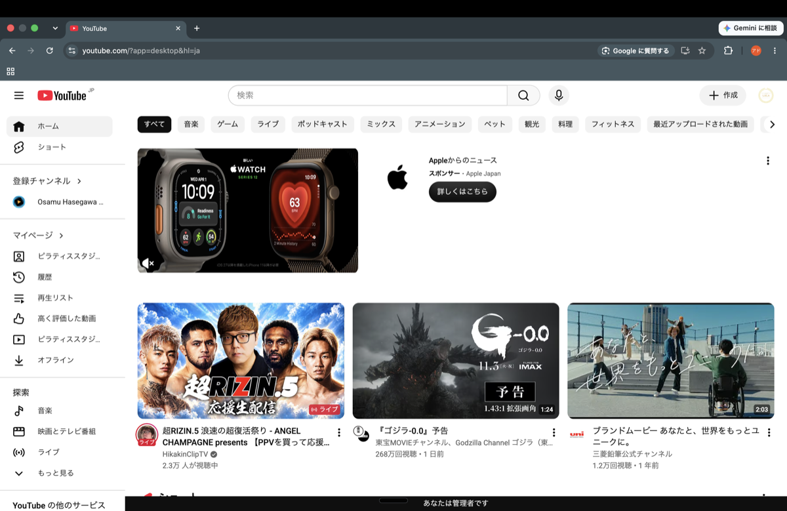
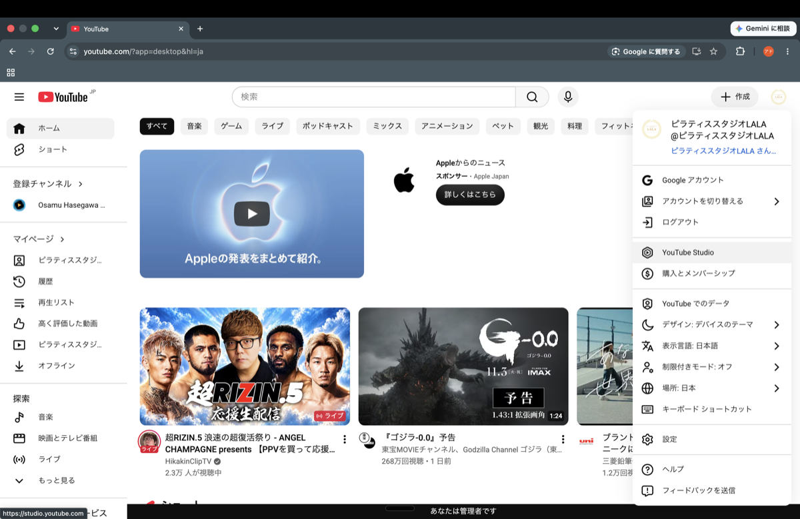
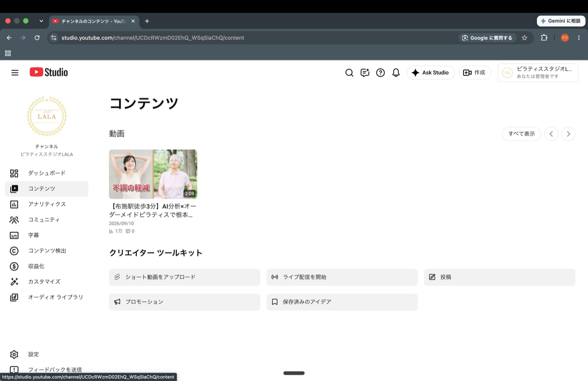
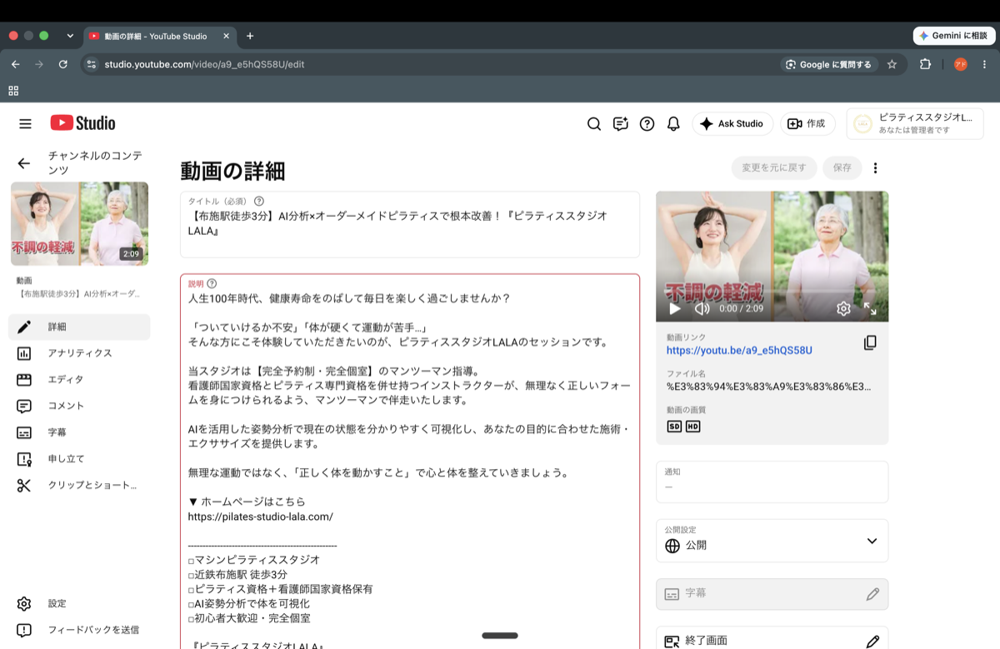
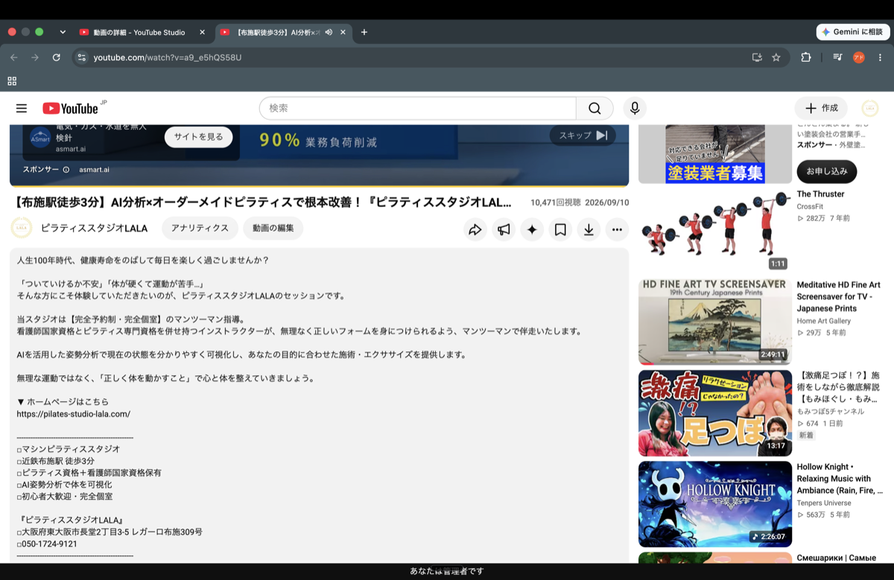

ピラティススタジオLALA様｜株式会社ランバード｜最終更新：2026年9月10日

画面右上にある、チャンネルのアイコン（丸いマーク）をクリックしてください。

アイコンをクリックすると出てくるメニューの中から、「YouTube Studio」をクリックしてください。

「コンテンツ」の一覧から、該当の動画のサムネイルをクリックして開いてください。

この画面をさらに下にスクロールしていくと「視聴者」という項目があります。
「はい、子ども向けです」に丸がついていたら、「いいえ、子ども向けではありません」に変更してください。
設定を変更したら、上記④の画面右上にある青い「保存」ボタンを押してください（変更前は薄いグレー、変更後に青く押せる状態になります）。

↑ 現在この状態（赤枠内、黒色の文字）
保存後、この視聴ページ（youtube.comの方）を再読み込みして、リンク部分が青色・下線つきに変わっていれば完了です。